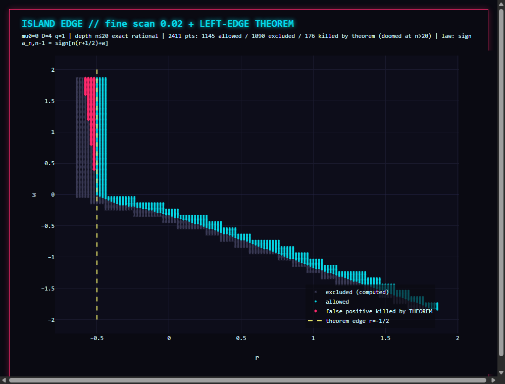

Nine cells vanish between depth 10 and 20 — all at r = −3/5. The law kills the cell at exactly n = 10w+1: the measured death list matches cell by cell. At finer resolution the law removes 176 false-positive points that a depth-20 scan wrongly admits (pink, below), each with its predicted death depth.

0.02-resolution boundary scan; yellow line — the analytic edge; pink — theorem-corrected points.